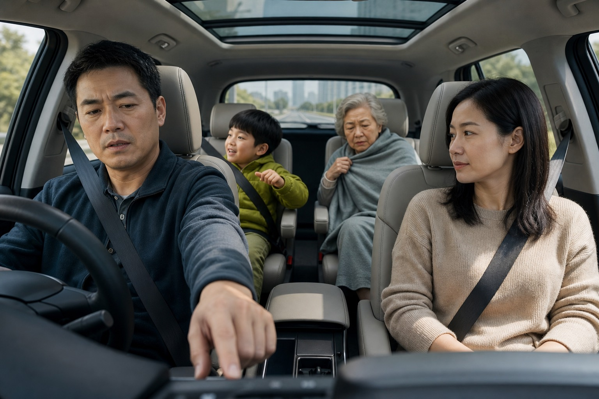
高价值全家不同冷热感受调温
全家一起坐车，每个人对冷热的感受都不一样。
孩子醒着玩时，需要凉快一点；等他睡着了，又要把温度调高、风量调小，免得着凉。
我们觉得刚好的温度，老人可能已经嫌冷，尤其不能让空调一直对着膝盖吹。
麻烦的是需要观察和反复调节，孩子睡着还是醒了，或者车内换座了，就要相应调整
需求洞察
一家老小同车出行，希望车内环境能跟随不同乘员对温度的体感偏好、睡/醒状态、座位变化做相应调整，让全家人都舒服，我也不必反复观察和代劳操作
![面壁智能 ModelBest]()
从 SuperMate 场景库中筛选的 10 类场景·72 个子场景

高价值全家一起坐车，每个人对冷热的感受都不一样。
孩子醒着玩时，需要凉快一点；等他睡着了，又要把温度调高、风量调小，免得着凉。
我们觉得刚好的温度，老人可能已经嫌冷，尤其不能让空调一直对着膝盖吹。
麻烦的是需要观察和反复调节，孩子睡着还是醒了，或者车内换座了，就要相应调整
一家老小同车出行，希望车内环境能跟随不同乘员对温度的体感偏好、睡/醒状态、座位变化做相应调整，让全家人都舒服，我也不必反复观察和代劳操作
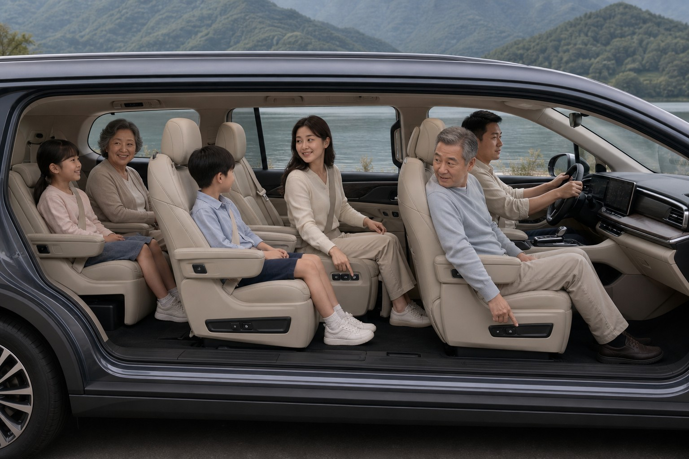
高价值一家人在车内，大家身高、身体状态不同，对空间和坐姿的要求也不一样。
奶奶个子小，腿部空间不用留太多，但她腰不好，靠背喜欢直一点。 爷爷身高一米八，需要多留一些腿部空间。小朋友占的空间则相对少，可以坐得紧凑些。
老人小孩的位置都是我来帮忙挨个调整。中途只要有人换座，座椅又得重新调
大家庭多人出行或临时换座，车辆能识别和延续每个人习惯的空间与坐姿，不必每次重新手动调整，每个人能有舒服的乘坐空间
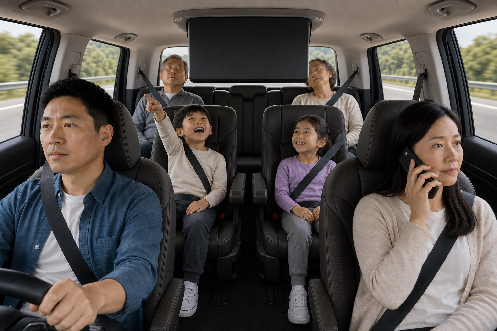
高价值一家六口自驾，除了一起聊天听歌，有时玩累了，也会在各自座位上休息娱乐 —— 人在同一辆车里，想做的事却不一样。
比如刚才二三排还在一起看动画片，后面奶奶在三排睡着了，那我就要把动画片声音挪到仅二排。
车内互动状态一变，往往整车声音环境都得重新调一遍，总要靠自己反复观察和操作调整
当多成员长时间同行、各有各自活动时（听歌、看动画、休息、打电话），希望可以方便地调整车内的声音环境，给到大家独立空间，减少相互之间的干扰
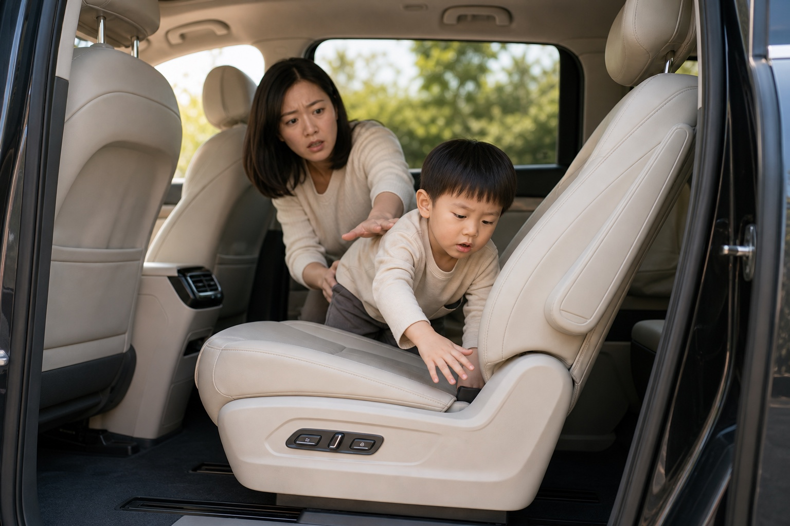
高价值车里很多东西都能电动动起来：座椅靠背、座椅扶手、冰箱门、车门开合... 还有一键成床等各种模式。
小孩可能会乱按，手或者身体可能没注意就就被夹住，来不及躲开。虽然这车说有防夹，可多半是夹到后、顶到有阻力才停。对我来说，那已经晚了半步，尤其孩子力气小。
我希望的是可以做到“预防”，就是识别到潜在风险，还没真正夹上去，就可以停止并提醒，才是真正的安心
当使用座椅电动调节或一键座椅等模式时，希望在真正夹上之前就能察觉潜在风险并停下、提醒，以免只靠遇阻才停，尤其车上有孩子时情况下
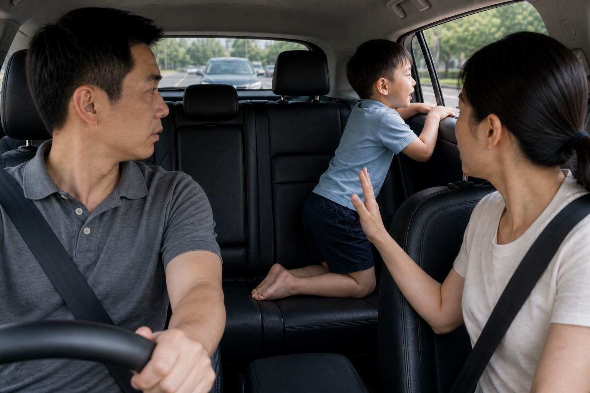
高价值小孩正式调皮的年纪，每次带他出去，在车上容易坐不住，四处乱动
只能大人不断口头提醒：要好好坐、手不要伸出去、马上转弯了。但大人越反复说，他越不愿意听
我后来发现，乘车安全不能只是枯燥的口头命令，如果说可以结合窗外场景做有趣的安全教育知识，比如正在经过的隧道（“时空隧道要系好安全带”）、转弯和红绿灯（“坐稳了飞船要加速了”），用孩子觉得有趣、听得懂的方式讲给他，让他愿意配合，也慢慢记住为什么要这样做。
孩子在行车过程中坐不住，有一些吵闹或危险行为时，除了劝阻外，我更希望用孩子愿意听的方式表达和沟通（如结合车外实景的趣味主题故事 “要进入时空隧道要做好”），让他主动配合并逐渐形成乘车安全意识
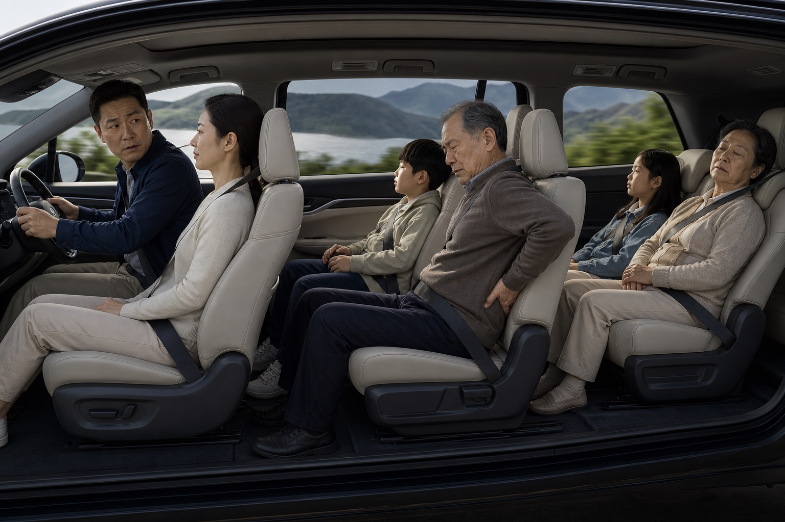
父母上了年纪，出去玩的时候，需要对他们身体和精神状态格外关照一下，累了就少逛一些，或者多停车休息一下，不要太密集。
他们腰椎、颈椎劳损，长时间保持固定坐姿，很容易腰酸背痛，需要时不时换个坐姿和下车走走休息一下。长时间久坐密闭车厢，也会出现头晕胸闷的情况
但他们经常累了也不会主动说出来，默默忍着，可能也想减少我的麻烦。自己开着车，也容易忽视父母真实身体状况和感受
与年长父母一同出行，关注到他们没有主动说出口的疲惫和不适（困了累了/ 晕车 / 久坐酸痛等），以此给到关怀和调整好接下来的行程节奏
暑假带孩子出去看世界，不要整天宅在家里。确定大致行程后，我会提前查沿途城市和景点，了解当地的历史、传说、动植物和生活习俗。
但大人觉得有意思的历史文化，直接讲给孩子听，他往往没什么反应。「我得把知识翻译成他能听懂、愿意继续追问的故事或者问题，在吃饭、睡觉前和他聊一聊」
资料不难找，难的是怎么变成孩子愿意听、愿意追问的内容，引起好奇心。我希望旅行还没开始，他就已经对目的地有了想象，觉得这是一次自己也参与决定的探索。
带孩子出游前，可以把这次出行旅程安排转化成孩子听得懂、感兴趣的故事或知识点，激发孩子的参与度和对旅行的期待
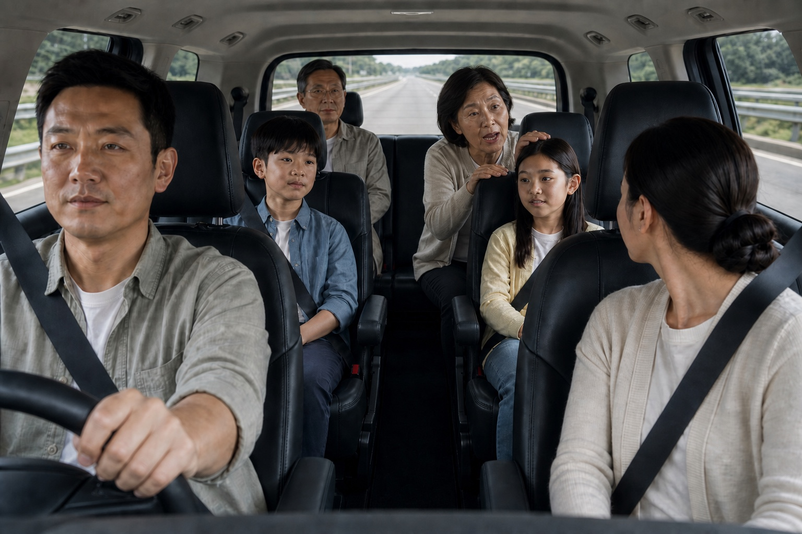
一家人出去玩的高速上，全家一起说话聊天，奶奶坐在第三排，说话声音本来就不算大，再叠上风噪、胎噪，我们坐在第一排经常只能听见半截。
前面聊得热闹，后面回应不上来，她提高嗓门又累，我们也听不清。有时只能让二排当传话，或者干脆各聊各的。
一家人出行开在高速上、想全车一起说话时，一三排之间的话能相互听清，不用靠吼或传话也能轻松聊起来
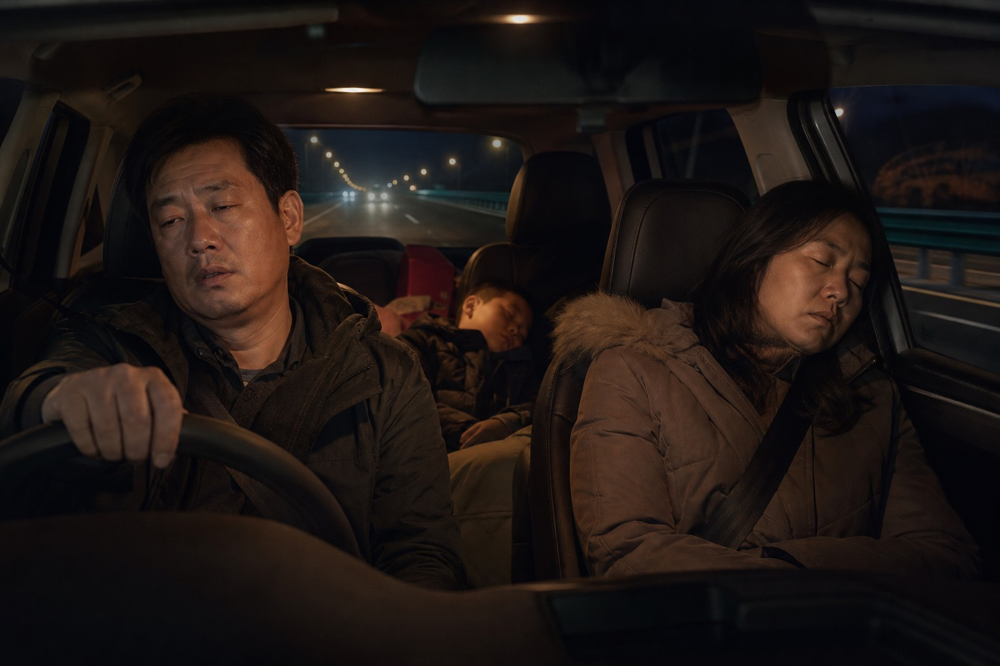
过年回家开长途，有时候疲惫其实已经上来了，自己却觉得身体还撑得住，但反应慢慢变慢
太太在副驾驶睡着了，也没人再盯着和我说话。状态却在下滑，却很难准确判断自己到底还能不能开，总是觉得再撑一撑没事
长途驾驶、疲劳已累积却不自知情况下，能及时警醒自己状态已下滑，避免潜在安全隐患
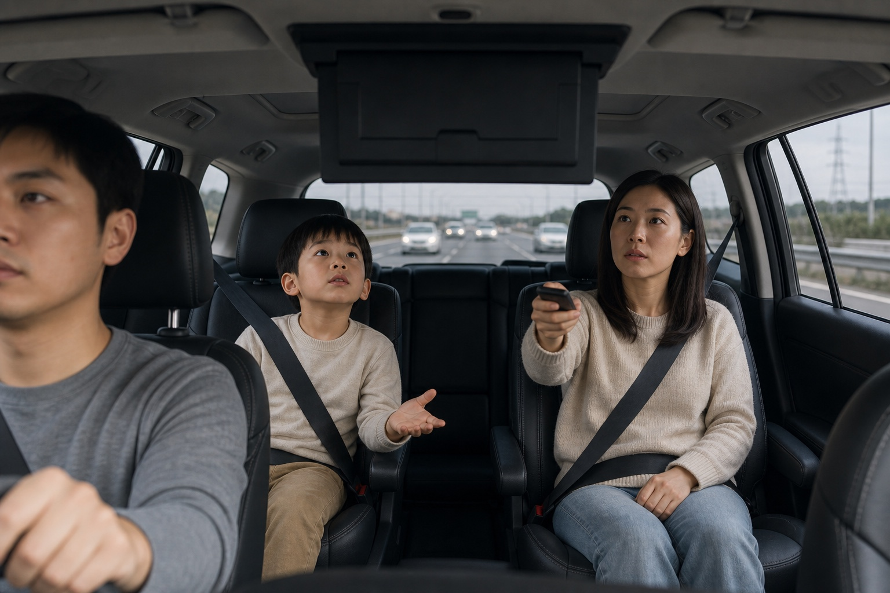
孩子坐久了就容易不耐烦，我们会给他看动画片。小孩还小，不会自己操作屏幕，也说不全片名和集数，每次都得大人帮找。
他要看的越来越具体，表达却还是孩子的逻辑：「我想看上周姥姥帮我找的那个小乌龟」，「大象去小老鼠家做客」，「他们俩去海里冒险那一段」
线索对我们远远不够 —— 尤其上次是其他家人帮忙找的，连片名都不知道。找到片子，也不知是哪一集、哪一段。
我们只能翻观看历史、按角色情节搜，再打开几集逐个确认。尤其我自己开车时更麻烦：腾不出手，只能让他等，或先放个相似的，他往往更不满意。
孩子想看特定的动画片或片段，要根据孩子口语化、并不完整的情节描述或观看历史，找到他想看的内容，减少反复搜索带来的繁琐和孩子等待时的烦躁
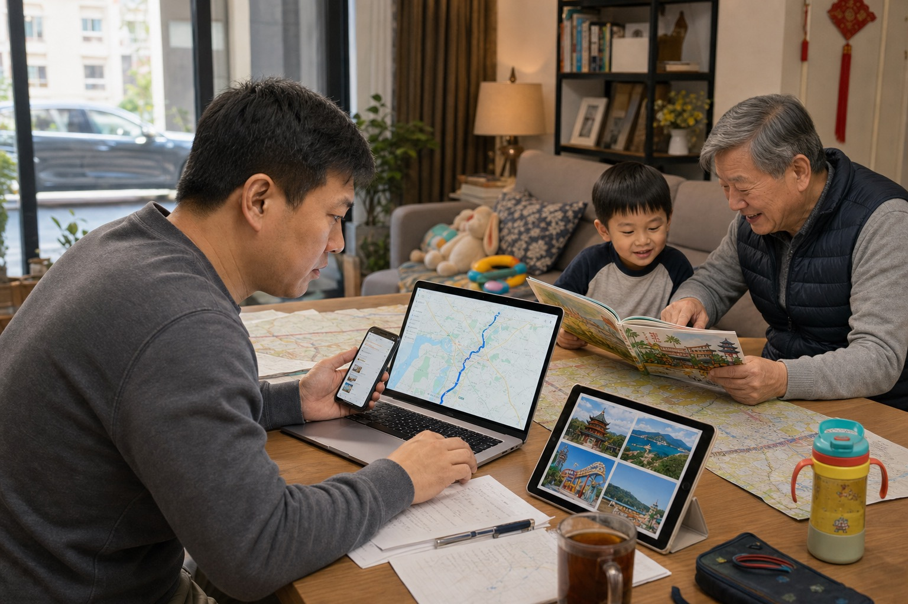
大家庭长途出门，规划出游路线的时候，得顾着每个人的情况：适合五岁孩子去的地方、老人腿脚不便、长途休息偏好有母婴室服务区，最好是五星服务区，歇一会儿顺便给车充电。
但各种出行平台上的信息都太过于标准化了，并没有考虑到我们家庭的出行偏好
只能我自己先到各个平台找，再结合自家的情况做好导航路线的筛选，规划起来非常费劲
规划大家庭长途自驾时，希望可以贴合家庭成员的出行喜好、身体状况等因素来制定计划，让出行安排和节奏妥当
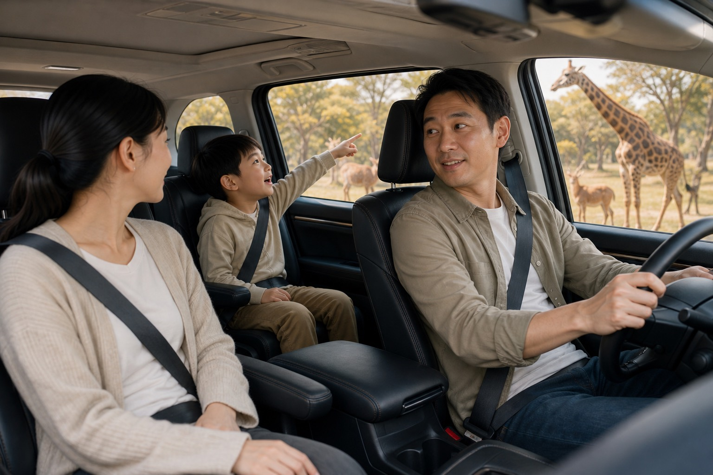
高价值周末带孩子去野生动物园玩，车是可以直接开进去的，想让他多接触接触户外，涨涨见识
小孩对动物园里的一切都很好奇和兴奋，经常会看看车外的不同的动物。也会经常和大人提问，比如那个红色的动物是什么，那个长脖子的动物怎么睡觉啊，路边黄黄的是什么树
问题一个接一个，但我们其实也都不一定能很好地回答上来，经常是临时搜，不想错过这么好的教育窗口
孩子沿途窗外的事物充满好奇和疑问，我希望能够很好地响应他并且有高质量的回答和互动，满足他的好奇心，寓教于乐
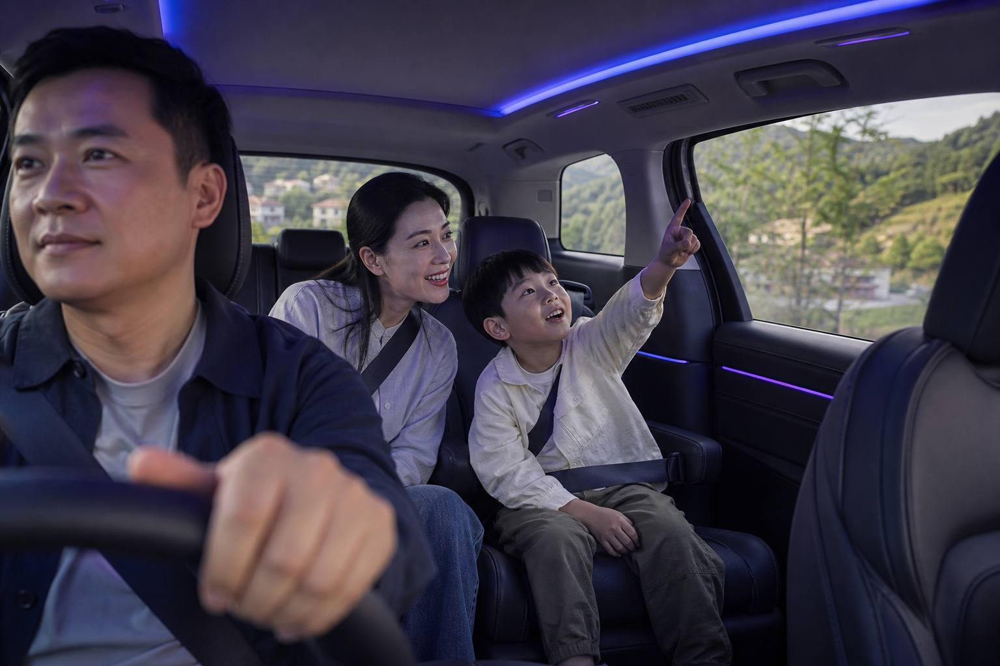
高价值带孩子去科技馆，刚上车还挺兴奋，路上会有一堆问题。但如果我没有持续和他互动，后面他就又开始吵着听儿歌、看动画片打发时间，一直盯着车内看屏幕
既然这次的目的地是科技馆，我希望从上车开始，车的角色就摇身一变成宇宙飞船。 我们的车不是普通汽车，而是一艘准备执行任务的宇宙飞船；沿途经过的树林、山坡、小镇和路标，也能自然成为冒险地图里的一部分。
这样对他来说，科技馆不是到了目的地才开始玩，开过去的这段路本身也是旅行的一部分，有沉浸感，也充满乐趣
希望结合本次行程主题，把座舱和沿途风景都变成孩子听得懂、可以参与的“沉浸故事空间” （去科技馆，车 - 宇宙飞船，路过隧道 - 时空隧道） ，让孩子不再只是被动等待到达，而是在路上就能有沉浸感和参与感
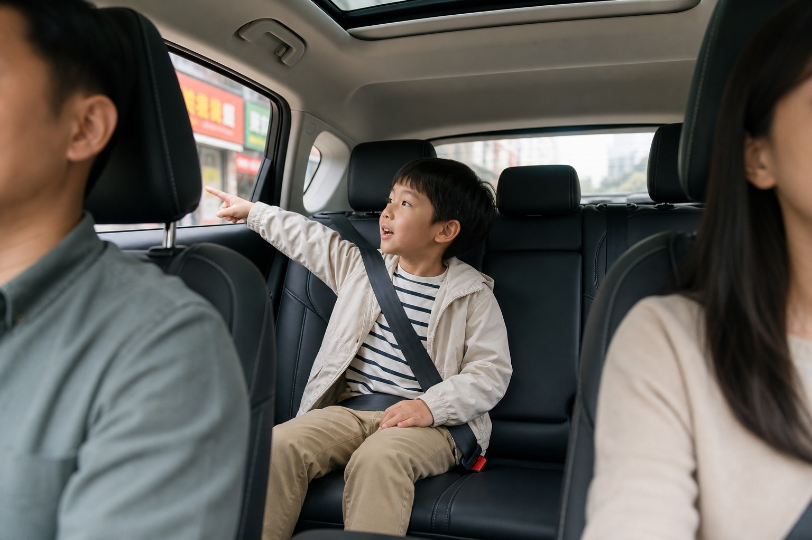
带孩子出门，怕他车上太无聊的，又不想让他天天盯着车内的屏幕看。我会带他一起玩一些“窗外游戏”。 比如路牌的认字游戏、认识车标的游戏。
这些字和正在经过的地方连在一起，他比看识字卡更有兴趣，认出来还会很兴奋。
孩子越玩越兴奋，一直让我陪他继续玩，但是大人的精力也有限，有时候也难以抽离开来做自己的事
和孩子开车出行时，希望能把沿途的事物变成趣味互动游戏（比如窗外认字游戏），让车程更有趣味和参与感，也不再总是依赖大人和屏幕看动画片
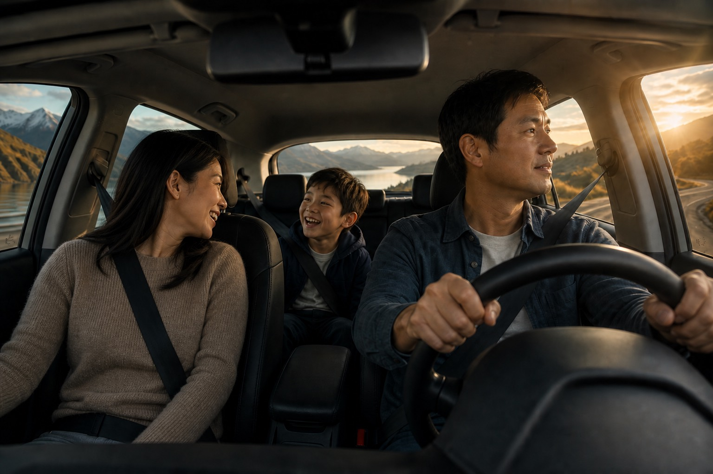
开车带孩子出门时，窗外常会掠过好看的风景，后排孩子也会突然蹦出一句有趣的话，或者全家一起笑起来。这些美好的瞬间往往只持续几秒。
我自己开车，腾不出手来及时记录。有时想喊家人帮忙拍，话还没说完，风景或者有趣的对话瞬间已经过去了
家庭出游途中路过好看的风景或出现有趣亲子互动时，希望这些稍纵即逝的美好瞬间能被更及时地留下来
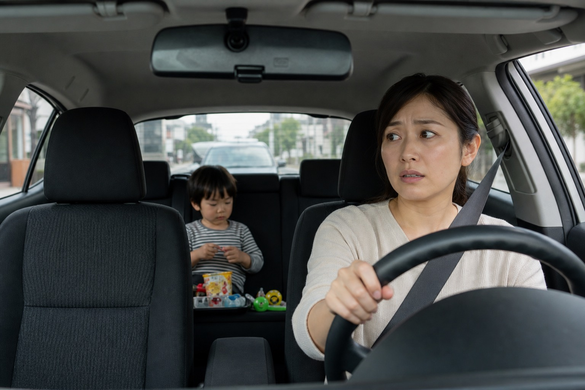
高价值自己带娃出行，小孩在后排为了能关注他，会准备好玩具、小零食给到他。
我顾着开车，前面路一颠簸，就担心尖锐小玩具戳到他，或者东西放不稳掉地上，会口头提醒他一下。
我只能时不时抬眼看后视镜，确认一眼又赶紧看路，。既怕看久了分心，又怕不看漏掉风险。
当独自带娃开车时，希仍能及时察觉后排孩子可能的风险场景（物品掉落、路面颠簸被小玩具戳到），给到及时提醒，但也不会影响驾驶注意力
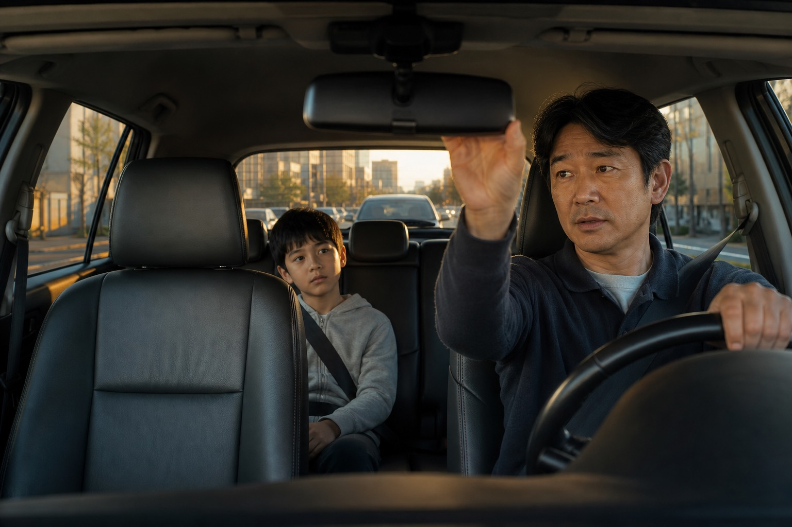
高价值接孩子回家时，我很想和他聊聊今天在学校的事，这段路上往往是一天里难得能轻松说话的时间。
但开车时我得盯着路，很难一直留意他的表情和语气变化。他有时兴致很高，有时又不想多讲；我只能边开边问“今天怎么样”，或者后视镜里观察一下他的状态，很难及时接住他的情绪
我希望这段车程不只是接送，还能真正陪到他，及时察觉他的状态变化，找到合适的共同话题一起聊，也能在他需要时给一点陪伴和引导。
接送孩子出行，能及时留意到孩子的情绪状态（开心或低落），及时接住他的情绪并自然地聊起来，让这段路成为真正的情感陪伴
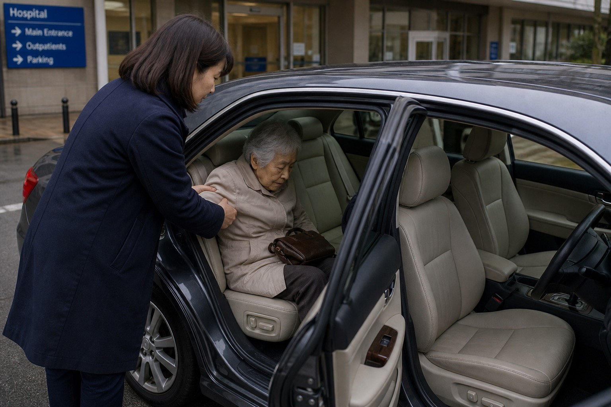
高价值奶奶年纪大了，我会定期开车带她去医院检查。奶奶膝关节和腰都不太好，入座姿态和座椅角度不好，都会导致身体上的疼痛
上下车她的膝盖不能大幅弯曲、抬腿。座位如果太低，坐下和起身要靠腰猛发力。每次入座我都会后排空间调大一点，调高后排座椅角度和位置，扶她慢慢坐稳。
入座后，再把副驾座椅靠后，腿托升起来，脚搭上去让膝盖能舒服一些。靠背调直一些
每次上车都是我帮她调，但她总是怕我麻烦，口头总是说可以了可以了
带腿脚不便的长辈出行，希望可以把座椅调整到她合适入座和行车时乘坐的最佳姿态，提升舒适性
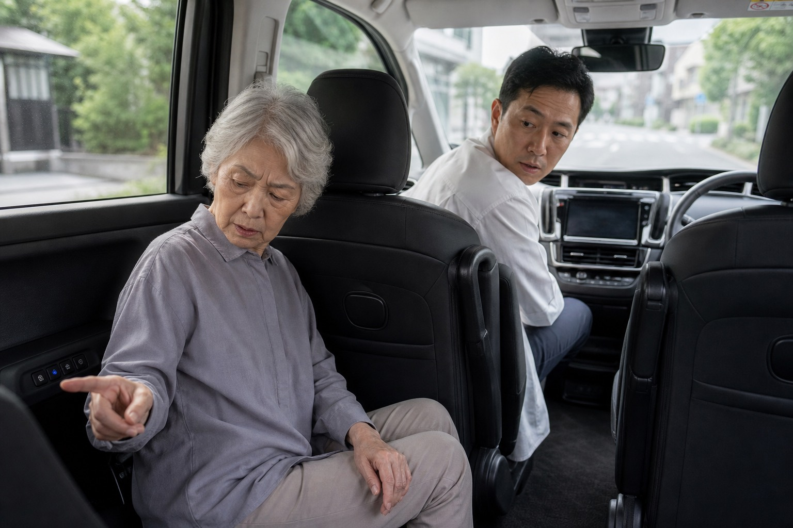
带父母出行，他们入座后排后，我让他们需要的话自己调一下座椅和空调，坐得舒服些。
可屏幕内里面功能又多、字又小，他们根本不好操作。这种界面设计对他们一点都不友好。他们不好操作，也怕麻烦我停车帮忙，干脆说“不用了，这样就行”。一路上将就着坐
长辈能轻松操作屏幕里的各项功能操作（座椅角度、空调等），能自主调整到所需状态，不会看不清、不好点，也不必一直将就或担心开口麻烦我
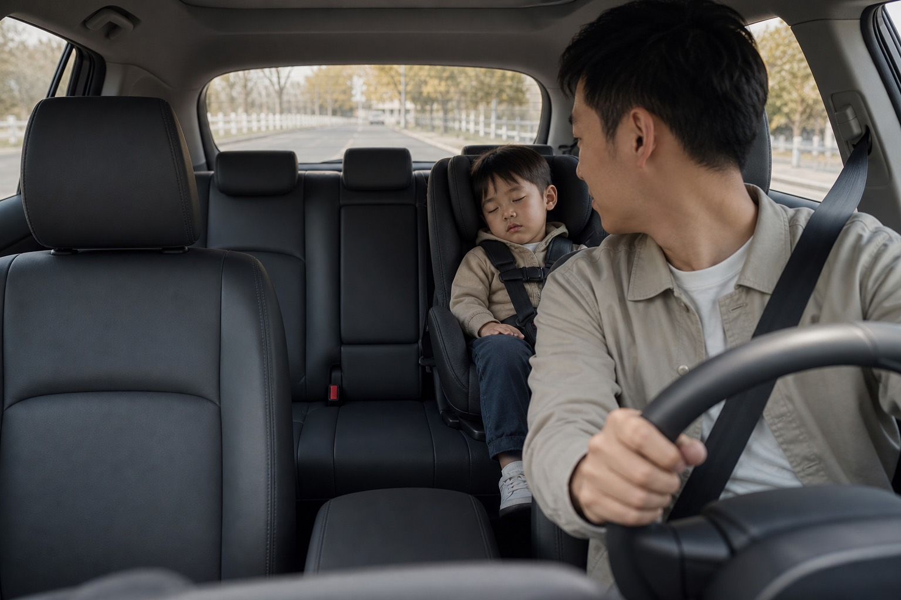
周日下午我自己开车接孩子下兴趣班，他一开始还在后排跟我聊天，聊着聊着后面安静下来，后视镜里看，才发现他已经睡着了。
发现他睡熟后，我会趁红绿灯停车间隙把后排风量和导航声音调小，关上遮阳帘、调暗灯光，免得他被风吹或突然吵醒。 如果中控屏幕里能帮忙调二排座椅躺姿就好了
有时顾着开车，经常不能及时发现，而且一套操作开车时也很不方便
当孩子在后排不知不觉睡着时，我希望能及时发现，并在不分散驾驶注意力前提下，让后排环境变得更适合睡眠
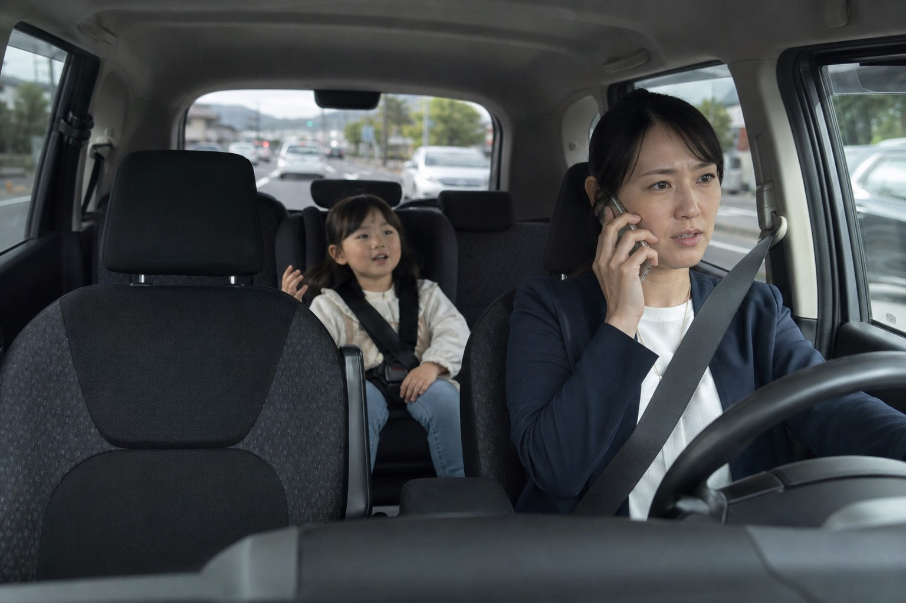
接到孩子回家路上，孩子迫不及待想想要分享今天的新发现，兴奋地和我聊天。
但突然有一个电话过来要接听，孩子还在后面一直想要互动，又想让我帮他播儿歌，让我没法很好地讲电话
这时候真希望语音助手可以成为自己的嘴替，聪明地把话接过去，和孩子快乐对话。播放的儿歌也可以默认地把声场跳到二排
和孩子互动过程中，突然有事情要处理，AI助手可以及时帮我接过话题并继续陪伴孩子，让我可以快速抽离出来，不受打扰地处理好事情
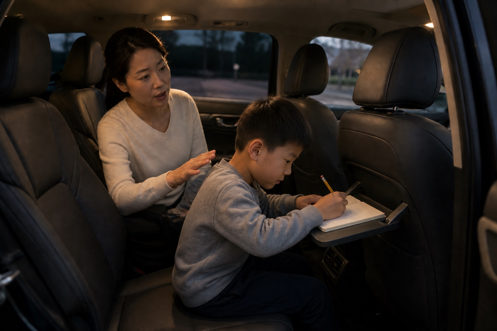
孩子每周一、三晚上有手球课。兴趣班和家是两个方向，为了不来回折返，我接到他后会先停车，让他在车里写作业、吃晚饭，再直接去上课。暑假自驾时，也会趁服务区停车把作业写完。
我会展开后排小桌板、调好座椅，坐在旁边陪着。 车里毕竟不是固定书桌，座椅、桌板和光线每次都要重新调整。我要先跑到前排座椅调节，把桌板调到合适高度，然后再帮小孩调后排座椅。
傍晚车内光线不够，我只能另外装一盏支架灯；他写着写着又容易低头、弯腰，我还得不时提醒「坐直一点」。
陪同孩子在车内写作业，我希望车内能提供合适的环境（光线充足、座椅角度合适等），规避昏暗用眼、弯腰驼背等健康问题
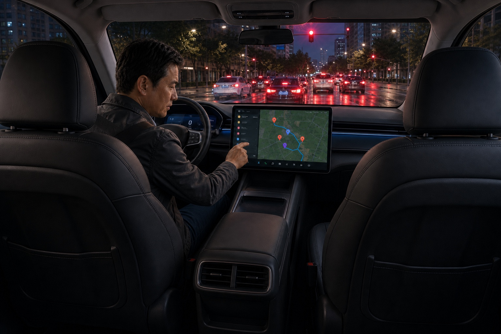
接两个娃下课，再去接老婆下班，这条线几乎每天都走。导航里要陆续把地址一个个加进去。
本来就赶时间，但每次上车后，都得要在地库里重复同一套再出发：搜地址、添加途经点、确认顺序。天天如此，很繁琐
每天接娃再接配偶的多站地址导航，行程相对固定，希望可以减少这些重复、繁琐的操作流程
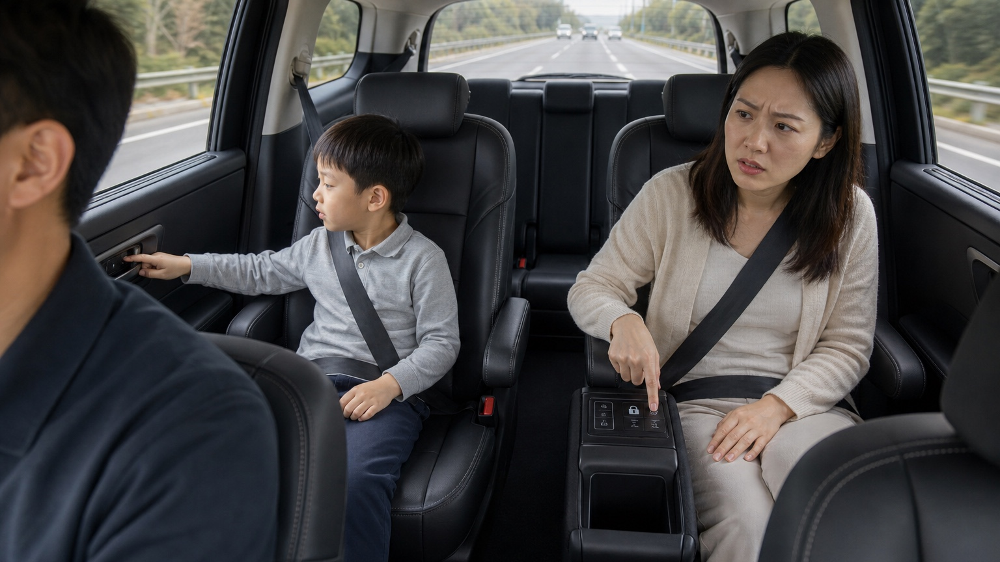
孩子坐后排时总想开窗、乱按车门，我会开儿童锁，避免他在行车过程中误操作。安全是安全了，但现在的锁定方式经常是一刀切。
有时大人和孩子坐在后排时，车门、车窗、座椅、空调甚至屏幕都会一起被限制。大人想调一下靠背或温度也用不了，只能叫前排帮忙；下车时还得等人从外面开门。
当孩子与成人同坐后排时，希望车辆既能限制孩子误操作、乱按等，但也不影响后排成人的正常调节操作，不必总依赖前排代劳操作
接孩子放学的路上，他跟我说，明天有美术课，老师要带绘本。回家后我们会提前找出来、放好，觉得第二天肯定不会忘。
结果第二天早上出门还是忘了，开出去一段，孩子才突然说绘本好像还在家里。只能掉头回去取，再重新送一趟。尤其赶上学高峰时更慌，最后还迟到了
接送孩子上学，当天美术课所需的绘本材料已备好却忘记带上车，希望出门前或刚上车时能核对齐，避免半路才发现折返
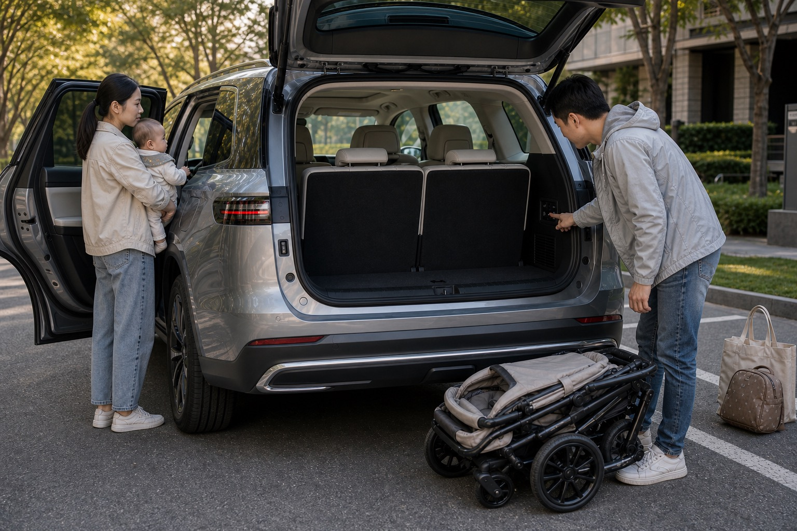
开车带小宝宝去公园，婴儿车比较大，需要把三排座椅放倒后才好放进去
打开后备箱了才发现，上次三排坐过人，座椅还立着。只能临时去放倒座椅，二排座椅还很靠后挡着，先调一下才能倒平。
本来抱娃、拿包就手忙脚乱，还要在车尾折腾一通，非常不方便。
当带宝宝出门时，希望可以快速地把三排放倒，腾挪出后备箱空间放置婴儿车，避免在车外临时折腾调节座椅，手忙脚乱的
这车经常在家用和商务接待之间切换。
有次刚把太太送到，副驾座椅被她调得很后面，下一趟马上要去接客户。我得赶紧把副驾往前挪。
小孩坐后排，儿童锁我一般默认开着，但接客户时就经常忘了提前解锁，导致对方从里面打不开门
每次场合一切换，一些设定就要重新整备，经常一忙就忘了，场面挺尴尬。
当车辆从家用切换至商务接待场合时，希望之前的一些座舱设定项（如座椅位置、儿童锁等）能按场合快速对齐，以免遗忘而导致场面的尴尬
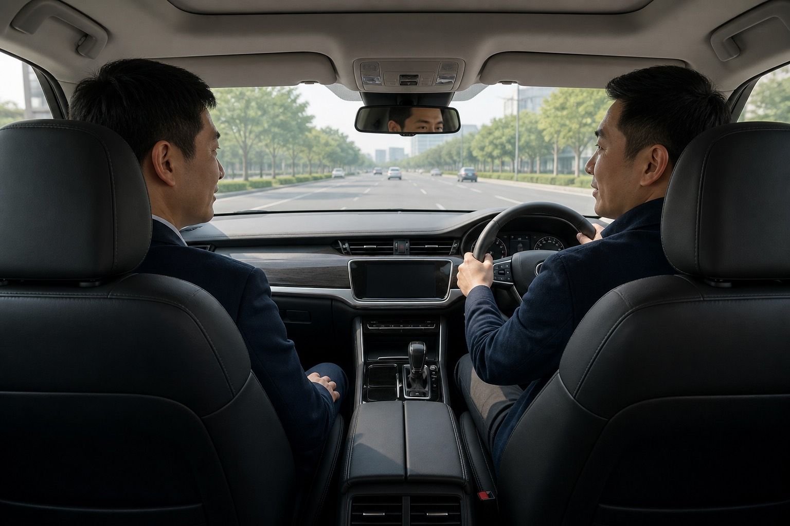
高价值刚接触不久的客户前来拜访，在车上这段路程往往轻松聊聊，免得一路沉默。
我会找些能让对方感兴趣的话题打开局面：聊近况、聊见闻。有的客户对我的车感兴趣，我就介绍几个亮点，打开话题。有时候也会根据客户的城市、行业等背景做点功课，备几句能聊的。
但很多时候并不清楚客户喜好，不知道聊什么，冷场一两分钟就尴尬。
接送刚接触不久的客户，想要找点能让对方感兴趣、聊得起来的话题作为谈资，让车内氛围轻松，拉近距离
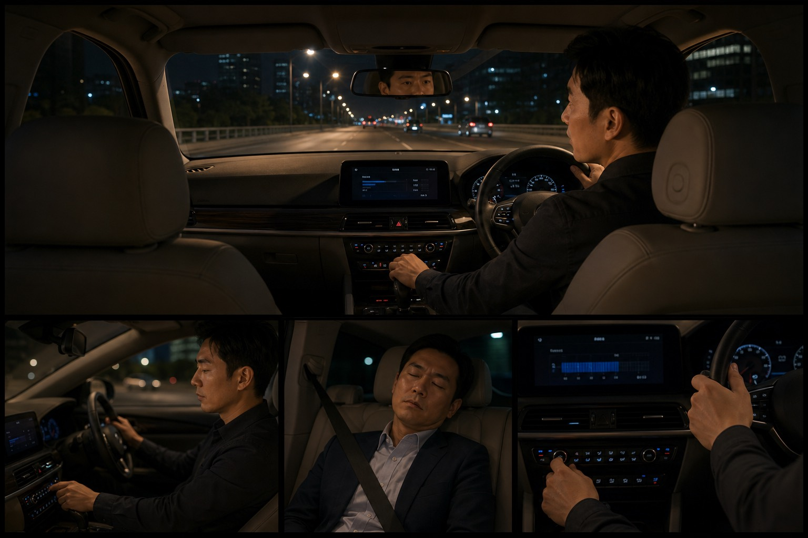
高价值和客户饭局结束后，开车送客户回去
刚上车时我们通常还会继续聊天，但聊着聊着，客户已经在后排睡着了，我过了一会儿从后视镜才发现。这时我会把温度调高一点，声音调小，再调整遮阳帘和车内灯光，尽量不吵醒他。
有时候开车没注意，还一直在和他说话，他估计也是疲惫着简单附和，挺不体面的
当商务饭局后的客户在返程后排逐渐困倦时，我希望能更及时地发现他的状态，并放低音量、收敛交谈并调整温度与光线，以便客户安稳休息，也让接待过程更体面
车都是家商混用，刚接完孩子放学，又要赶过去和客户吃饭。
后排还留着小孩的玩具，有时我根本没注意到。心里想着赶时间出门，也来不及细看
等客户拉开车门上车，才发现玩具还摊在后座上，只能临时塞到后备箱，挺尴尬的。
车辆经常家用商务场合切换，希望能够记得在客户上车前，能注意到后排散落的物品（如孩子的玩具、睡觉的毯子等），避免客户来了才发现、临时收拾、尴尬又显得不专业
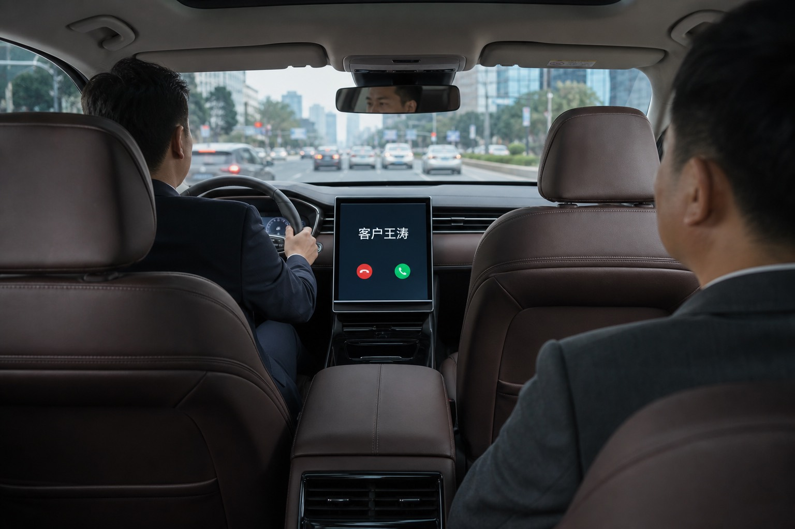
高价值开车接待领导或客户时，有时候路上会突然有其他工作相关的提醒和来电打进来
手机默认连着车上的蓝牙，有时一些电话播报，或者之前设定的提醒信息，突然在行程途中播报出来
尤其是一些和竞争对手相关的，名字一报，车上人都听见了。既尴尬又有泄密风险。
当正式接待领导或客户同乘时，希望一些敏感的信息（日程、来电、提醒信息等）不要突然播报或显示，保护好隐私、避免失礼
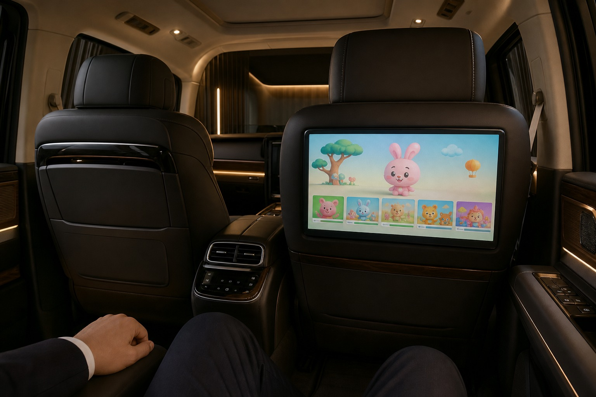
高价值商务接待贵宾时，对用车的仪式感体验还是比较在意。 希望有相应的迎宾仪式感，舱内氛围也能有尊贵感，放一点合适的轻音乐，让对方一坐进来就觉得被郑重对待。
可现实里，后排屏幕里的壁纸显得不够正式，一点进去，桌面上显示的还是孩子最近看的动画片历史。整个座舱氛围不像在接待贵宾。
家用留下的痕迹摆在那儿，一时也来不及清干净。对方刚上车，座舱仍像日常带娃、随手用车的状态，尊贵感起不来。
当商务接待贵宾上车时，希望座舱能呈现正式的迎宾与尊贵氛围（如正式壁纸、抹去屏幕桌面孩子动画片观看历史等），以免仍留着家用痕迹、对方一坐进来就感觉不够正式。
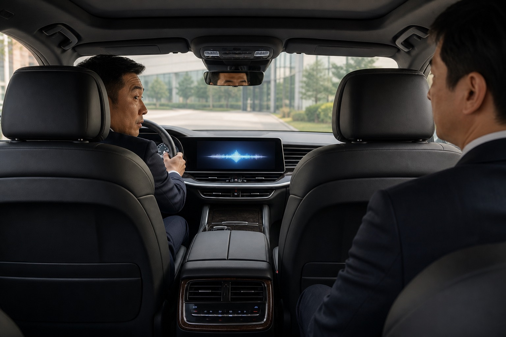
高价值接一些重要领导时，车上会有一段寒暄。场合偏正式，我更在意气氛是否稳重、得体。
领导在说话或我们刚寒暄上，语音助手有时会突然开口：主动推荐、插播天气，或把车内闲聊误当成指令。
系统一抢话，谈话就被打断，显得不够正式，薄弱的边界感，也让人觉得车机不懂分寸。有其他人同乘的时候非常尴尬
当接重要领导并在车上正式寒暄时，希望座舱（语音助手、声音播报等）克制少打扰、少主动发言、少抢话，维持正式场合该有的谈话节奏与体面。
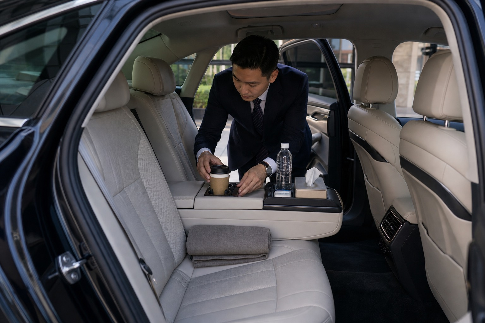
接不同客户时，我会尽量记住对方的情况，再决定车上放什么。
比如有的客户有糖尿病，就准备的水和零食一定要是无糖的；有的容易晕车，会先备上晕车贴或晕车药。有的爱喝咖啡，我会提前去买一杯星巴克。
这些细节要靠自己记，也要在出门前专门准备。客户一多，谁适合什么、什么时候该提前买，就容易混。一旦记岔或漏备，接待就显得不够用心。
接待有特定偏好或禁忌的重要客户，希望能按对方情况准备合适的水饮、咖啡、药品等，以免通用备品不合用或遗漏关键细节
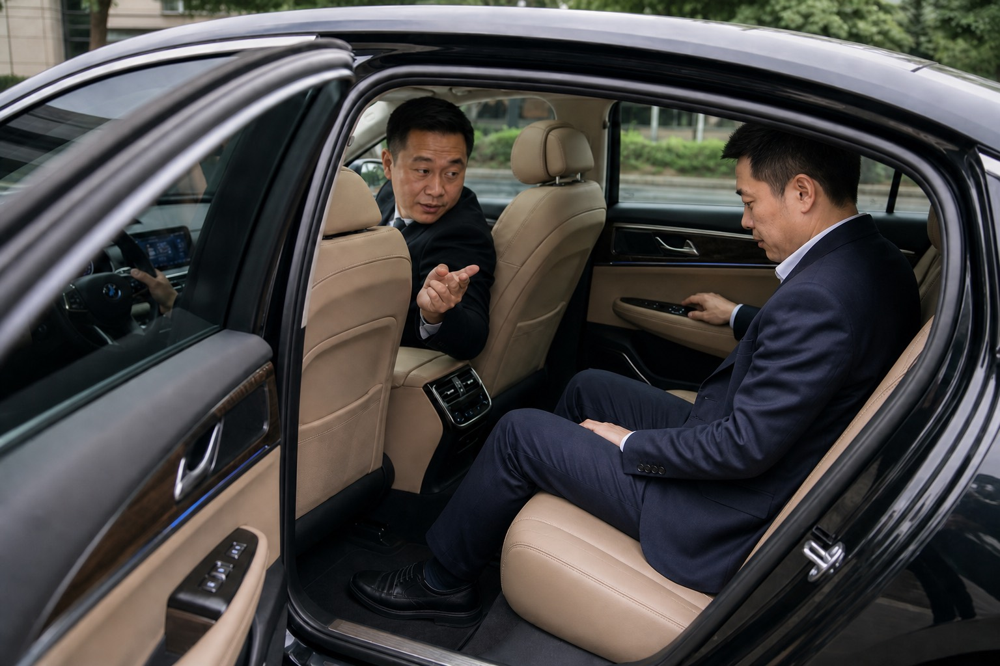
客户上车后，对我这辆车的后排不太熟，空调、座椅怎么调往往不会。
我需要口头跟他们说一下，但按键多、位置又不统一，对方经常分不清到底是哪一个。只能转身回头，用手比划指一下
有时候还会经常不小心按错按键，或者调不舒服就干脆放弃只能硬坐着
接送客户，希望后排的舒适调节（空调座椅等）对客户来说好上手，能够自己调到舒服状态，我也不用总是回头指点。
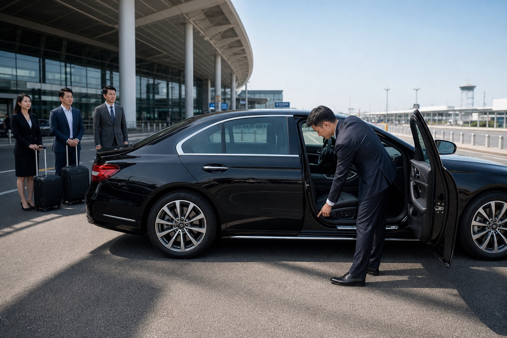
到机场接两名来拜访的客户。事先知道对方体型偏大，我特意把前排移到最前，好让后排腿部空间宽敞一些。
接到人后才发现，这次临时多了一位同行，要坐在副驾。到车边时，我一边帮着搬行李，一边又得赶紧把副驾座椅往后调到合适位置，生怕客户站着等太久，显得手忙脚乱。
当机场接客时实际乘车人数与事先预想不一致时，希望能更快调整好座位空间，以免客户在车边久等、场面显得仓促。
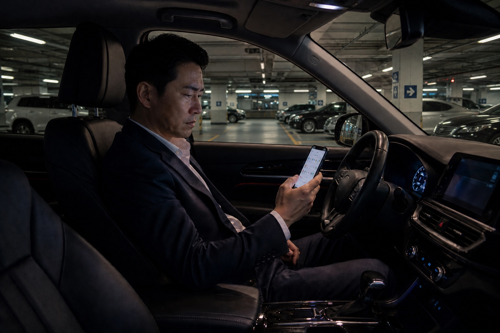
车停在机场候客区或停车场，提前抵达后，我就在车里刷抖音、回微信，想把这段等待打发过去。
需要留意飞机抵达时间，并估摸着客户从下飞机再到通关、取行李时间，然后提前下车走过去接
车内等待时间，人其实放松不下下来，还是会频繁切回去看航班动态，也怕漏了客户电话，等待时间估摸不好，两边都要相互等。
在机场等候客户时，希望能掌控好时间节奏，等待过程能安心放松打发时间，也不会错过要出发的时间
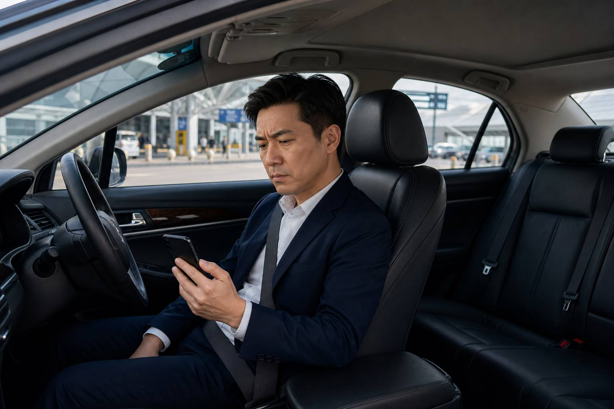
接客户前，我会先问清航班号记下来，再按到达时间提前出发，到机场等他们出来。流程我自己觉得挺稳的。
可航班有时会延误。出发前我没再查一眼动态，人已经开到机场，才发现飞机还要再等很久。
路上时间白耗了，停车费也跟着涨。明明记了航班号，关键变更却漏掉了，只能干等。
当按航班时刻提前出发去接机时，希望出发前能及时察觉到达时间变更（如延误），以免人已到场才发现还要空等很久。
公司做海外生意，常有国外客户来访。为了表示尊重，我一般自己开车去接。英文一般，路上也只能做些有限的寒暄。
车开过一些特色建筑、街道时，他们会多问两句。我想展开介绍，可词汇量跟不上，话到嘴边经常卡壳，停顿好几秒也接不上。
本该轻松的行车气氛，就卡在这些停顿里。聊不顺之后，他们也不太再往下延展话题，同车的闲聊渐渐冷下来。
当开车接送海外客户，希望表达的时候能聊得顺，以免因词汇卡壳让本该轻松的车内闲聊冷场
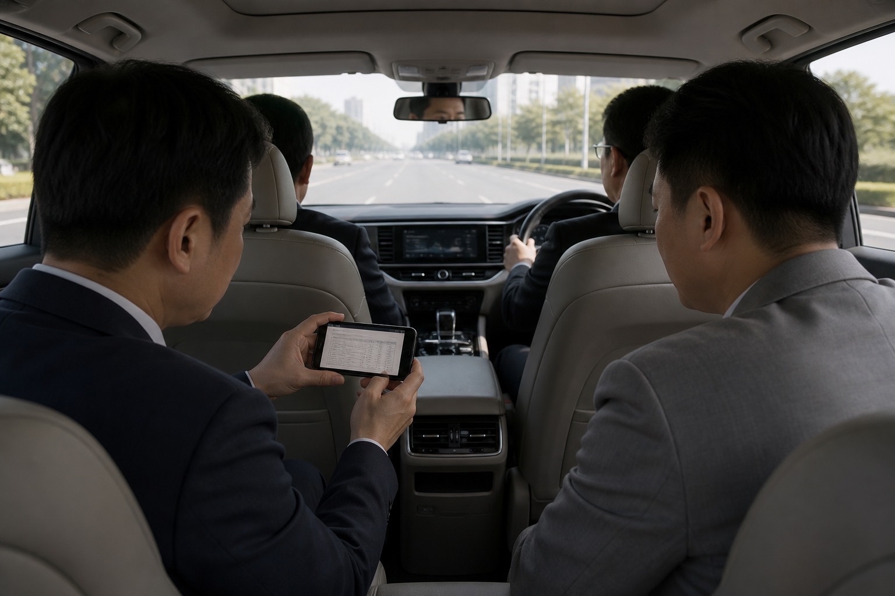
接客户一起去考察项目地，因为要在路上聊事，所以我让公司的下属开车，我可以专心和客户在后排聊天
我会在路上先把项目的一些进展情况和他介绍一下，提前有个铺垫。 主要是以口头聊为主
有时候讲到某个业务细节，口头讲不清，需要展示材料。但是自己手机展示太小 而且隐私考虑不太方便。 用的后排屏翻找、或者拿出电脑，又要花费时间找材料、到第几页，让客户等也很尴尬
与客户在后排谈论项目，需要展示特定材料时，能快速地进行调用找到相应材料，减少对话打断、少让客户干等
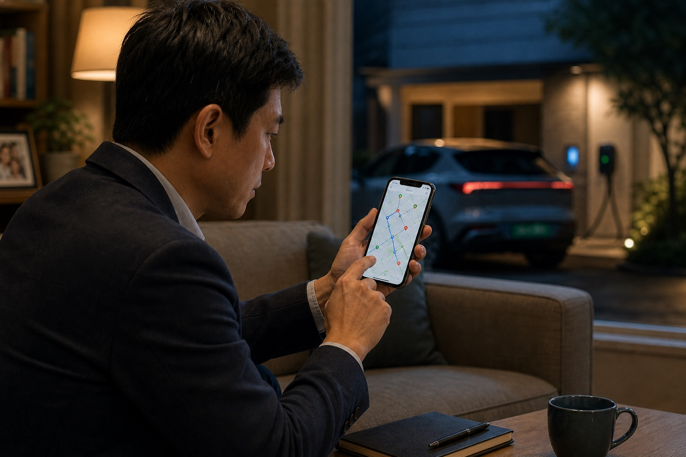
高价值我做销售的，一天里常要连跑好几个点：有的会议时间是固定的，有的拜访时间灵活，中间时间空档还想塞进银行办事、买东西这类私事
出发前一天，我会用手机地图，把地点一个个加进去，再按时间和路况改顺序。
每次都要在 App 里反复规划好久，比如改完发现某个约赶不上，或者修改后路线又不顺，又得推倒重排。
当一天要前往多地办事，希望可以基于约定的地点、时间要求，快速安排出一条时间和路线最优的出行方式，减少反反复复路线规划带来的麻烦
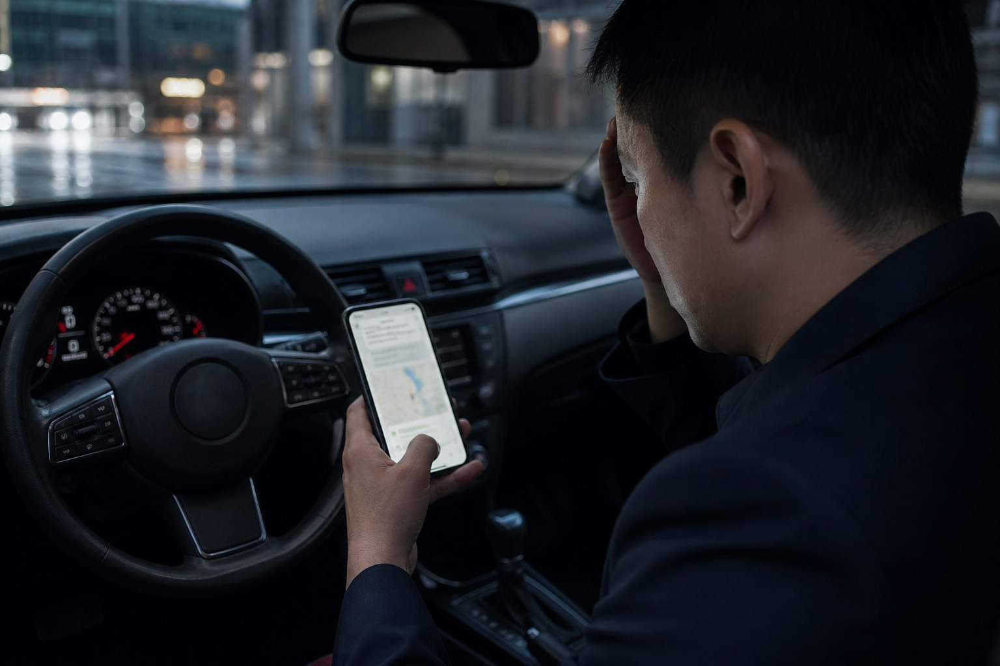
高价值有时已经按约定好了的见面时间临时要调整，“原来两点的会改到四点行吗？” 一个时间变了，后面的安排也会跟着受影响。
我只能重新打开手机地图，尝试调整拜访顺序，看看能否先去其他地点，再赶回改约的客户那里。
我最担心的是只顾着调整当前这一站，却让后面的行程绕路或迟到。我希望临时变动发生后，能尽快判断剩余行程怎么调整更合适。
当外勤途中行程有临时变更（如有客户临时修改见面时间），希望快速看清变动对后续行程的影响，调整至最优出行方案、减少绕路和迟到
我开广告设计公司，平时大半时间需要在外跑客户、开会、跑项目，一般会提前几天陆续规划好
约时间这件事很碎：接机时间、开会地址、客户公司... 还经常遇到这个客户微信里改了地点，那个客户电话里定了明天上午，还有人临时加一句“到时候再对一下时间”。
信息都散在不同聊天和通话里。我想起来了，就随手往手机备忘录里塞几句；忙起来，有时连谁几点、去哪家都对不上，只能再翻聊天记录或回拨确认。
经常需要外出多地办事，外勤约定通过微信和电话不同渠道陆续敲定时，我希望这些散落在各个渠道的出行时间和地点能被及时记全和管理，让出行安排不会遗漏
经常去到周边城市跑项目，很多地方都不熟。有时只是上楼送份材料、签个字，几分钟就能回来，但附近一时找不到车位停
想要路边临时停一下。但经常也分不清这里是不是严管路段、有没有电子眼、离开车辆几分钟会不会被认定为违停。
有些地方看着能靠边，心里却没底。继续绕着找停车场，又怕耽误客户时间。
在陌生地点需要短暂离车办事时，我希望及时了解当前路段的停车限制（会不会被拍等），以便在不耽误行程的同时避免违规停车
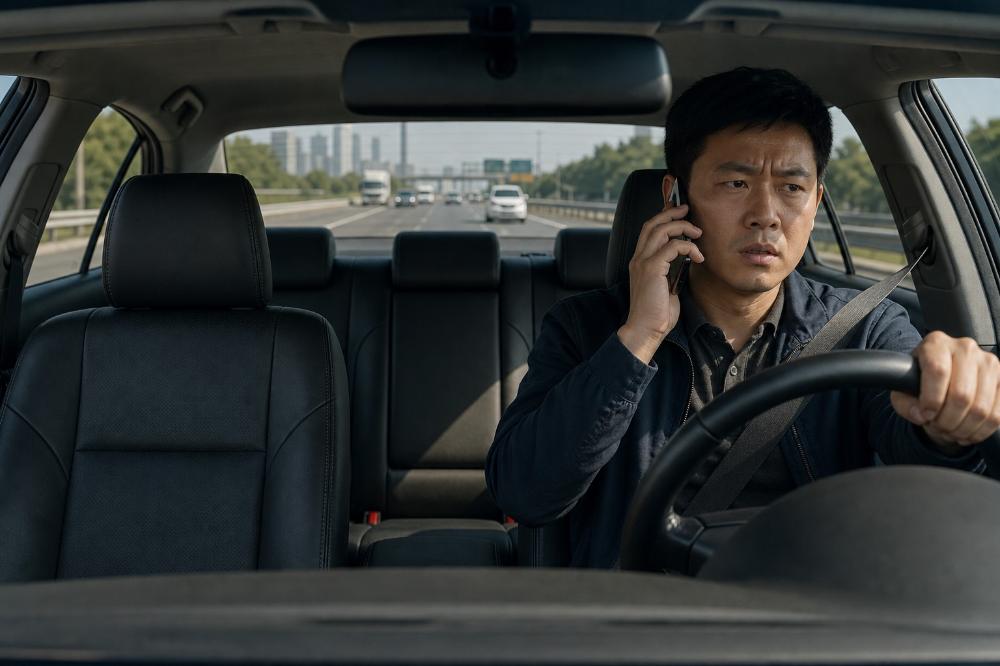
我多数时间都在外面跑业务，开车时也会不断收到客户和同事的微信消息和电话。
有些很紧急，比如要确认项目信息，最好能尽快回应。有些则只是普通群聊或可以等停车后再回复的通知。
我希望行车途中能先分清哪些消息和重要的电话必须马上关注、哪些可以晚点处理，也不被大量普通消息反复打扰。
开车时收到许多消息，希望优先筛选出真正重要需要关注的信息，将不紧急或操作复杂的事项留待停车后处理，以免被无关通知分散注意力，或错过重要信息
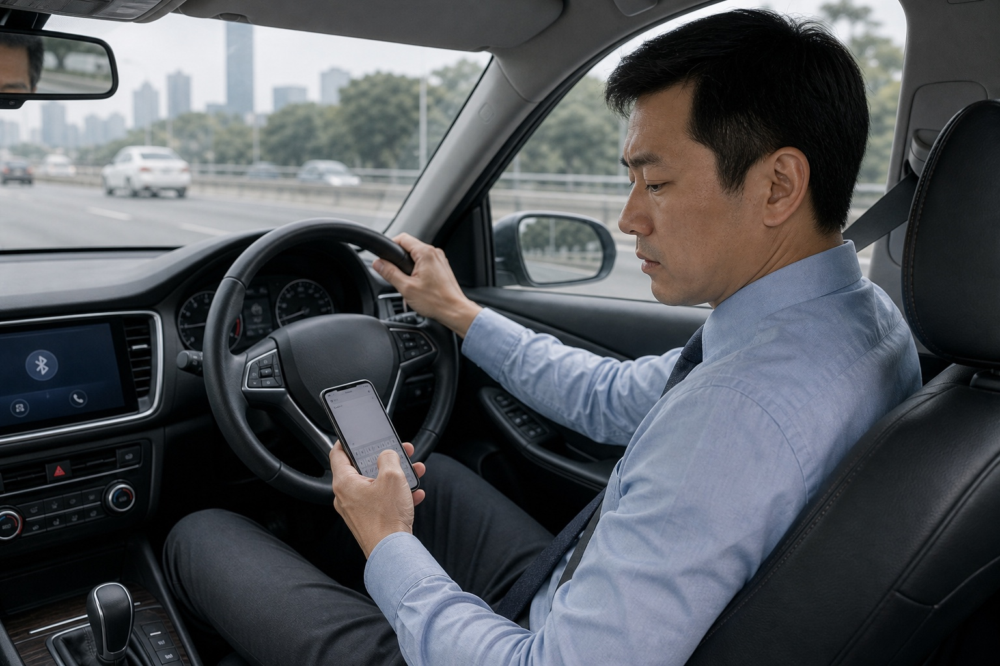
开车时客户打来电话，临时约见面时间、确认地点。对方说得很快，我一边盯路，一边听他说几点、去哪里碰面
本来电话里的对话就容易记不全也记不准，而且也来不及掏出手机记在备忘录里 。 经常不得不到了发消息再跟客户确认一遍，既耽误事，又觉得尴尬
当开车途中与客户电话敲定碰面时间或地点时，希望这些关键信息能被及时、准确地留下来，以免事后遗忘
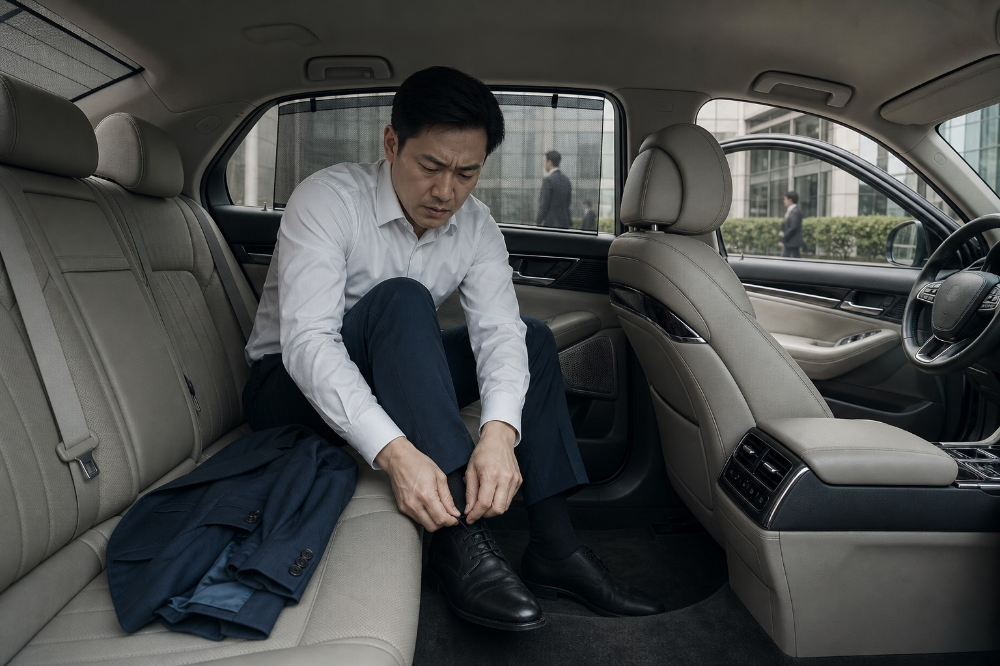
下一场要去开会，场合比较正式，我得在车上换一身着装。西服和皮鞋已经备在后排。
到地方附近我会钻到后排，把前排座椅往前挪，两侧遮阳帘升起来，再换上西装皮鞋。
可后排空间本来就紧，还要顾着隐私。一通操作下来，时间本来就紧，弄完一身急，也挺狼狈。
当赶赴正式会议需要在驻车时更换正装时，希望尽快获得车内相对宽敞且私密的换装条件，不必麻烦地反复调整车辆
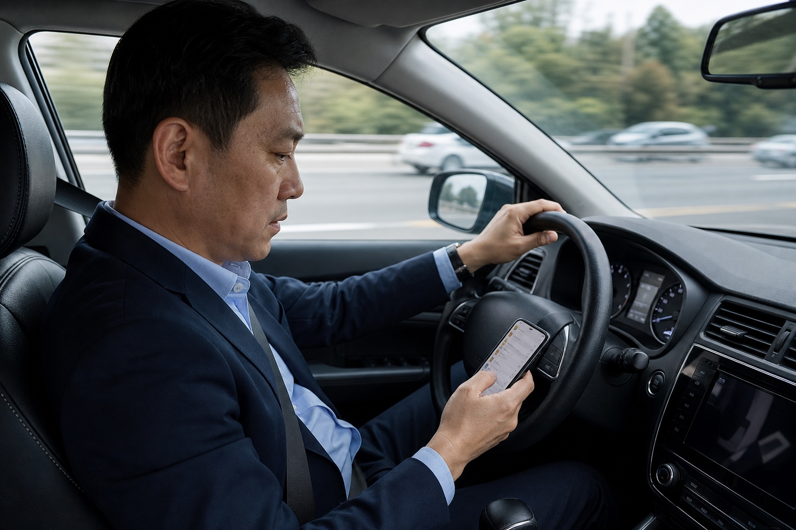
开车在高速上，这时候客户来电话要让我发份材料，有时是要在某个材料里查一下历史报价，要得比较急。
有时候事情比较急，想找个服务区再停下处理，但是又担心等太久，不得不开车时拿出手机翻找，挺危险的。心理负荷与分心风险双升
当高速行驶中，有工作上的文件材料需要查询或操作（比如客户着急要某份材料或查历史报价），希望在不影响安全地前提下高效地处理好事情，不耽误急事
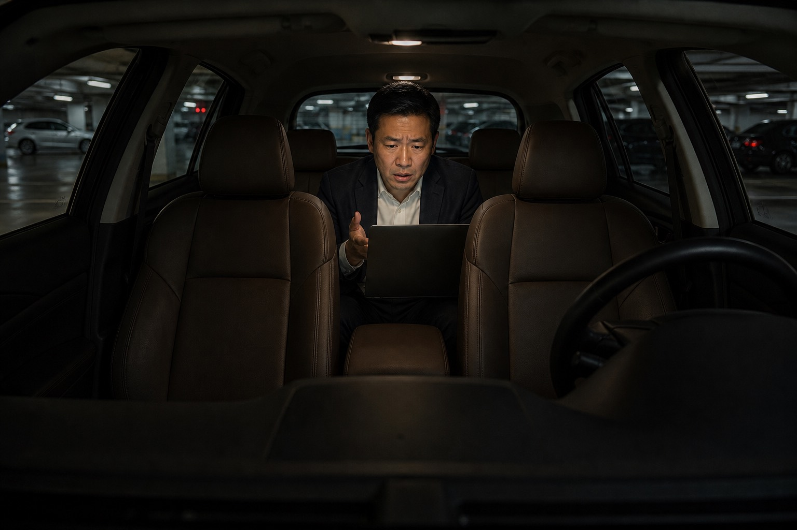
在外面办事时，临时接到和客户的线上会议，附近又没有合适会议室，只能把车停进停车场开。
关上车门后，外面仍可能传来车流声、鸣笛声、旁边车开关门的动静。我一边开会，一边担心这些声音被客户听到
如果需要开视频则会更尴尬，即便把车的阅读灯打开、换上虚拟背景，但是车内仍然显得很暗
尤其是一些比较重要的客户，不想让线上对方知道人正在车里，显得不够正式。
当只能停在车内临时与客户开线上会时，希望车内环境和车外嘈杂声尽量不进入对方听感，以免暴露在车内开会、影响专业印象
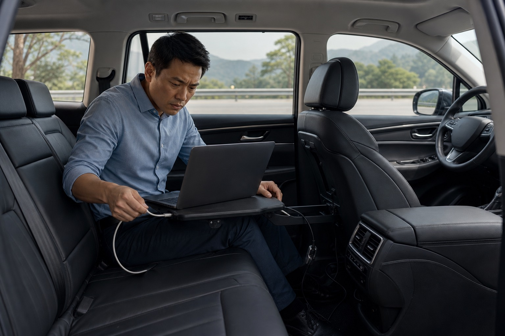
项目地附近没有合适办公场所时，我只能找到路边停车的地方，到二排处理邮件、改方案、开会。
我得先把前排挪前腾开空间，找地方架电脑，再扯充电线、调温度和座椅，打开 Wifi，办公完了还要把东西收回去，恢复成能载人的状态。 太麻烦了
当需要把车辆临时改成办公空间时，希望更快完成前置各项布置工作，以便尽快进入工作，少在准备环节消耗时间。
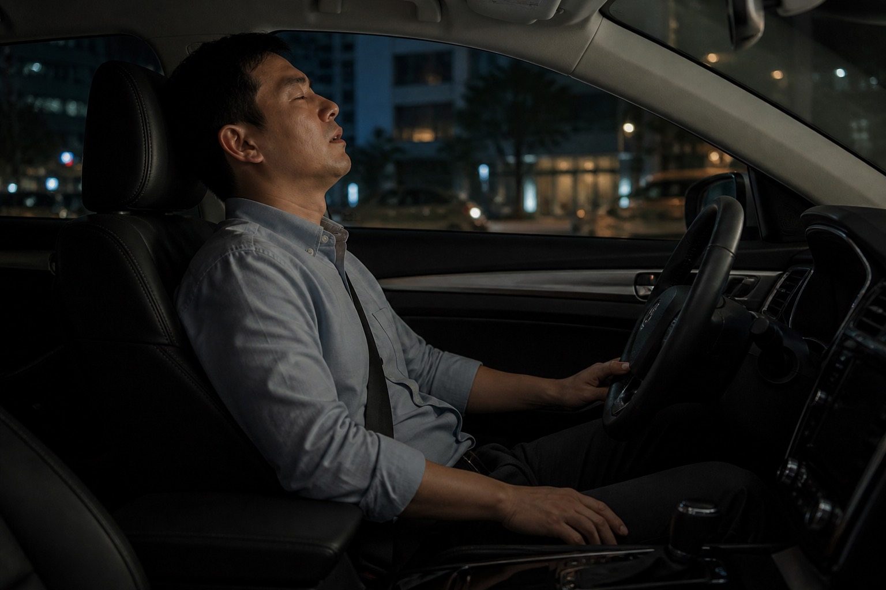
高价值忙完一天下班，回到车上，身上已经很累。有时还带着工作里的负面情绪：被老板骂过、会上吵过，脑子里还在反复回放。
车门一关，车里成了短暂的独处空间。我需要一点时间把火气压下去，不然一进家门，家里人最先接到的是我的坏心情。有时候会抽根烟，然后做个冥想和深呼吸，或者下班路上听歌
真正难受的不是路上堵不堵，而是工作情绪还挂在身上，还没缓冲好就要切换成家里的角色。
当疲惫、压力、情绪积攒，希望在车内时间能把状态舒缓下来，以免把情绪带进家庭或工作
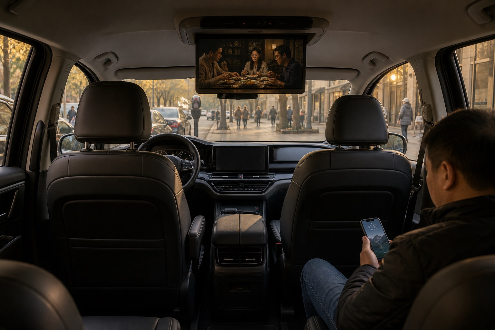
高价值等孩子下课、等客户见面，几十分钟这段空档车里就成了自己的空间。买车时想象的画面是关上门看会剧、二排放倒、屏幕打开、氛围调好，沉浸一会儿。
可一通操作要花时间，而且还惦记着等一下要接人，时不时拿起手机看一下时间和手机里消息
怕沉浸过头忘记时间，或者到点了还得自己把空间收拾回去、接客户的话还要把观影痕迹去掉。一想麻烦，有时候干脆就刷刷手机应付下时间了。
当停车等人、想用车内看剧放松时，希望娱乐布置与收尾不拖沓、且不耽误接下来的接人安排，以便这段等待真正用得上、又不用一直惦记时间。
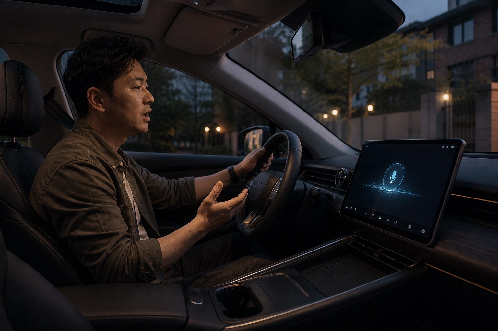
高价值一个人在车里的时候，有些压力没处说。偶尔想给朋友打电话倒一倒，又怕对方没空，也不想把烦心事甩给他们。
有时就跟语音助手随便聊聊，但它也不是专业的情感咨询或者健康顾问，多半只能接几句闲聊，并不真正懂我眼下的情况，说完还是闷着。
当一个人在车里压力积着没处说时，希望能有个不增加朋友负担、又能听懂自己处境的倾诉对象，以便把烦心事说出去，并且给可以给到自己排解情绪的建议
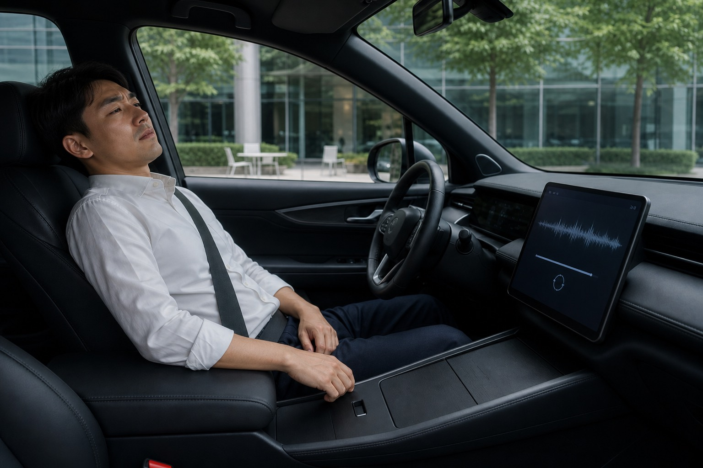
车停在公司楼下，中午我会回车上午休大约一小时。先调好白噪音，再定个闹钟，方便自己入睡。
可这声音要么一直放着，要么到点就关，很机械。定时关总是碰运气：设短了，人还没睡着声音就停；设长了，睡着后还在响，有时又把我吵醒。有些冥想/白噪音阶段还特别短，每隔三四十秒循环一遍，听久了反而像噪音。
想靠白噪音帮忙入睡，结果时长和循环节奏总对不上我的入睡节奏。
当中午在公司楼下用白噪音助眠时，希望声音时长与循环节奏能贴合真实入睡过程，以免未睡先停或睡着后仍被打断。
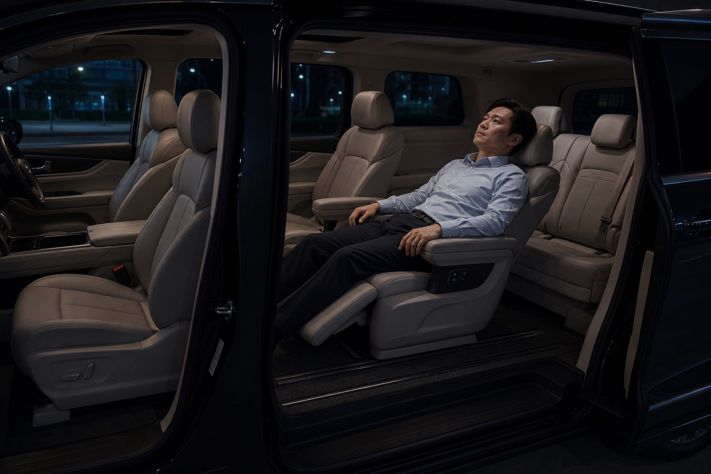
准备在车里休息一会儿，身体已经躺下了，可神经还处在兴奋、紧绷的状态，短时间内放不下来。
只能闭着眼躺着，脑子还在转着工作的事。越急着睡越清醒，时间一点点溜走。
明明抽出时间来歇，结果大半时间耗在「躺着睡不着」上，休息质量很差，起来也不解乏。
当在车里准备短憩，但身心仍紧绷时，希望能更快从兴奋状态放松过渡到可休息的状态，快速得到休息放松
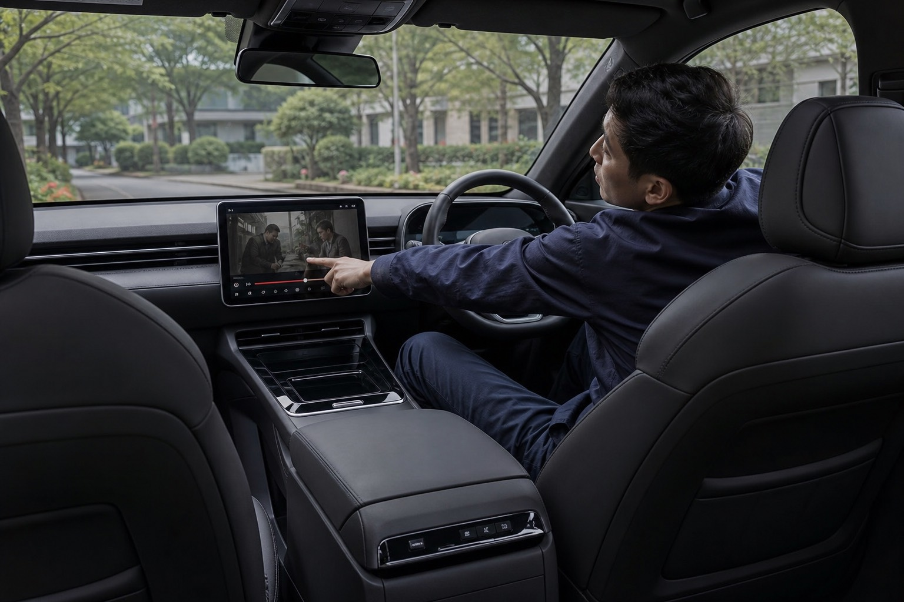
驻车后主驾驶躺着休息，用中控屏幕看看剧。看到某处想快进、拖进度、跳一下片段，是很常见的操作。
可人已经躺平了，屏幕还在原来的位置。要调进度就得卷腹起身去够中控，调完再躺回去；用语音说「快进到某某情节」又很难说清楚具体位置。
躺着本该放松，却为了一点点进度调节反复起身，感到非常麻烦，观影节奏也被打断。
当驻车躺着观影，想需要进行播放控制时（如调节播放进度），希望不必反复起身够中控也能完成细调，以便躺姿休息不被频繁打断。
周末特地染了头发、化了妆、穿了新衣服，准备和伴侣约会。上车后常用车里的摄像头拍张照片，把今天的造型记下来。
可同行的人照常打招呼、系安全带，像没发现任何变化。特地准备过的样子没有被接住，心里会有些落空。
希望自己不同于往常的精心打扮能被注意并得到积极回应，提升生活中的幸福感
和朋友约会，上车后或下车前，我都会在车里整理一下穿着和妆容。
但时间一赶，妆花了、领子没理好、扣子没扣好、头发乱了这些细节经常顾不上。
到了目的地才发现，只能再折返回去整理，既耽误时间，也影响状态。
精致打扮外出，希望留意好自己的穿着和仪容等细节，避免时间仓促没注意
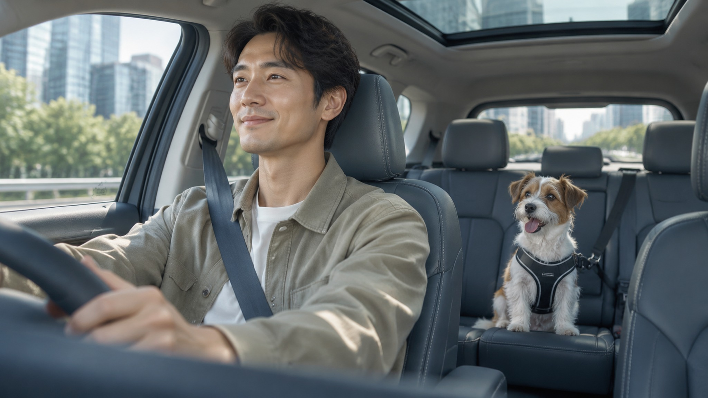
自己开车带宠物出门时，小家伙在二排，我只能通过后视镜偶尔回头看一眼，心里才踏实。
它可能太活跃爬到主驾，也可能玩具掉进座椅缝里；忽然安静下来，又分不清是睡着了还是晕车。
一边看路一边照顾它，腾不出手也顾不全。
当独自开车带宠物出行，希望能及时掌控它的状态与异常，行车过程中也能轻松把小家伙照顾好，不影响驾驶安全
健身回来身体很疲惫，想先在车里短暂放松一会儿。
座椅要调得舒躺一些，打开按摩和通风，空调又不能太冷，刚练完猛吹会不舒服。
这些条件要一项项调好才能真正歇下来，可人最累的时候，反而还要花力气做一堆设置。
当健身回来、想在车里短暂舒躺放松时，希望少步骤就能把躺姿、按摩、通风与适宜温度一次到位，有一个舒适环境让自己放松下来
和伴侣出门经常临时起意，边开边想沿途逛停，不会提前做完整规划。
车机地图里多是大众景点，对不上自己的偏好；只能打开多个 App 反复筛选，再来回对照距离。
人已经到了，还在纠结去哪，甚至开过后才发现错过了合适的小店。
周边自驾、边往目的地开边想沿途逛停时，希望临时的规划也可以找到符合自己品味的高质量游玩点，以免错过，或去了后不及预期
车停在商场、老小区、火车站这种人车都多的地方，总担心旁边开门蹭到，或者路过刮一下。
虽然这台车有哨兵功能，我会开着。但是每次误报很多，有路人经过离得稍微近一点了，就会误识别成剐蹭
每次上车车机里往往堆着几十条记录，刷过去也分不清哪条真有事，该留意的反而容易漏掉
当停在商场、老小区或车站旁这类人车密集处、又开着哨兵时，希望哨兵能记录真正需要被关注的信息（如剐蹭等），减少无效的误报记录
车比较大，地库、老小区里起步时，旁边常有柱子、邻车或杂物。
刚挂挡往外挪，车头、A 柱一带本来就看不全，一走神就容易蹭到盲区里的东西，万一蹲这个孩子或者放着个小石墩，在开始为看下去完全是真空的。车越大，起步那一下越要多瞄几眼，稍不留神就剐一下。
车比较大，当从车位或路边起步、四周有柱子邻车等障碍时，希望起步前能清楚周边近距情况，以免盲区没看到就蹭上。
我开台车油表总是掉得很快，开支大。总感觉和其他差不多出行方式的车友对比起来，百公里油耗都比他们高，加油勤
到底是驾驶习惯、载重物、胎压、还是什么原因把油耗推高了，好对症改一改。可仪表只有一个总油耗或平均油耗，分不清具体是哪段时间，什么原因导致
当车辆油耗持续较高，希望能分清主要是哪些原因在费油（驾驶习惯、载重物、胎压等），以便作出调整、节省用车成本
我车底盘比较低，遇到马路牙子、烂路、斜坡时，总拿不准高度够不够，能不能开过去，有时候还要下车看一下
有时候犹豫半天还是硬开，过去才听到底盘「咣」一下，或者碰到前铲。 有时候干脆放弃绕开，心里没底。
车辆底盘低，面对马路牙子、烂路、斜坡等路面时，希望在驶上前就能判断是否有磕碰风险，以免开过去了才磕碰
我车比较大，到市区老商场、医院一带找车位时，窄车位、限高地库、立体车库这类经常进不去。
跟着车机推的停车场开过去，到了才看见限高牌或机械库，只能掉头再找。白跑一趟不说，目的地附近还得重新绕。
车身尺寸大，对停车位有特定要求（不限高、非立体车库等），希望车机系统推荐停车场时能考虑这些因素，避免到了后才发现停不进去
车临时停在路边或一些比较复杂的地方，后排乘客要下车时，我总会想帮他们留意一下门外：有没有台阶、积水、低矮护栏、花丛，或者离邻车太近开门会蹭到。
可有时候忙着停稳、拿东西，来不及看全，提醒也没跟上。后排一开门，还是可能踩进水里、绊一下，或者门边蹭到障碍物
当临时停在复杂路边、后排要开门下车时，希望一些潜在风险提醒到位（如台阶、积水、护栏花丛或邻车距离等），以免后排乘客踩空、弄湿或开门蹭到邻车等意外风险
车辆没电在充电站停下，拿着沉重的充电枪走到车旁。
双手举着充电枪本来就费劲，才发现忘了打开充电盖，只能一手拎着，另一手再去按盖子。
动作被迫中断，充电准备也变得很狼狈。
当拿着充电枪靠近车辆时，可以轻松地开启充电盖，避免还要腾出手操作
新车刚到手，方向盘、中控和门板上密密麻麻都是按键。不少只有图案或英文缩写，盯着看也说不清具体作用。
手指伸过去又缩回来，怕按错影响行车，干脆先不用。
功能一直闲着，只能回家对照手册或上网查图解。
当刚提车、面对看不懂的按键或图标时，希望能当场弄清它是干什么的、按下去会怎样，以免因不敢试而把功能一直空着
开大车进老旧或车位窄小的停车场时，要同时留意限高、两侧车距，以及停好后车门和后备箱能不能打开。
每次都要小心估摸，常常停好后才发现车门打不开，或后尾箱会碰到墙面。
明明只是停车，却要反复挪车，心里也没底。
当开大车在商场狭小车位泊车，能够在入库前就能看清楚潜在风险和侧门与后备箱开合余量，以便一次停到位、少挪车、少磕碰
长途高速遇到暴雨时，前方路面可能已经开始积水，但驾驶者不一定马上留意到。
车速没降、湿地模式也没开，压过积水时车轮突然发飘，容易受到惊吓。
希望能在风险变明显之前，及时提醒降速或开启湿地模式。
当长途高速驶入已下暴雨、路面开始积水的路段时，希望能提前提醒降速或开启湿地模式，以免未察觉风险就压进积水、打滑受惊
在陌生地方临时办事，看到路边停了几台车，就跟着停在旁边。
当时没留意周围的禁停标志，回来后才发现被开了罚单。
临时停车看似方便，却可能因为没有识别到周边规则而付出额外成本。
当在陌生地方停车，可以识别停车周边是否禁停或有违章风险并给到提醒，避免违章罚钱